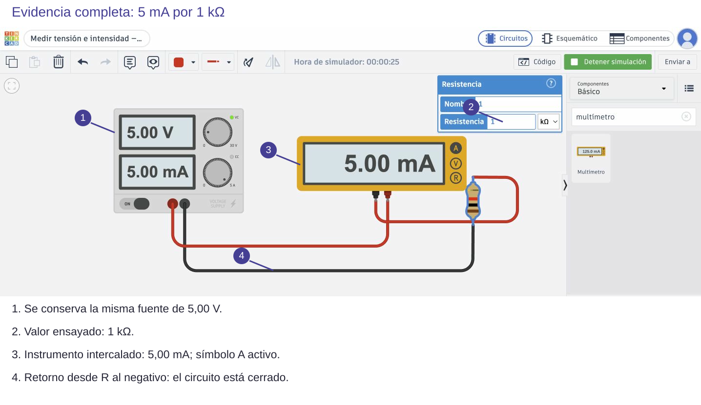

Contenido
Del dato a una conclusión
El informe no es una colección de capturas. Cada imagen debe responder a una pregunta, cada tabla debe identificar las condiciones y cada conclusión debe enlazar lo observado con el funcionamiento.
| Condición | Puntos e instrumento | Predicción | Resultado ilustrativo | Interpretación |
|---|---|---|---|---|
| Divisor 1 kΩ/1 kΩ a 5 V | V ⎓; roja S, negra 0 V | 2,50 V | 2,48 V, dato de ejemplo | Cercano al reparto por resistencias iguales; comprobar fuente real. |
| Mismo divisor con RL = 1 kΩ | Mismos puntos | 1,67 V | 1,65 V, dato de ejemplo | RL está en paralelo con R₂: reduce la resistencia inferior equivalente. |
Conclusión débil: «Ha bajado». Conclusión razonada: «Al añadir 1 kΩ entre S y 0 V, la salida bajó de 2,48 a 1,65 V en este ejemplo. La carga queda en paralelo con R₂, así que el equivalente inferior disminuye. El sentido y magnitud se aproximan a los 2,50 y 1,67 V calculados; para valorar la diferencia falta incorporar la fuente y resistencias medidas».
Modelo breve de captura anotada
La siguiente captura real identifica la fuente, el valor ensayado, el instrumento en serie y el retorno. Su unidad mA indica intensidad. Para tu divisor, adapta el rotulado: R₁/R₂, fuente, S, 0 V y puntas; añade «voltímetro entre S y 0 V». No tapes cables con los rótulos. Una flecha señala un punto; no sustituye al cable real.

Abrir esta imagen a tamaño completo
Completa durante el trabajo
Informe individual: 1 resistencias y simulación; 2 condensador; 3 diodo/LED; 4 transistor; 5 sensores/actuadores; 6.1 divisor y LED, 6.2 LDR, 6.3 NTC; 7 proyecto e intercambio. Distingue cálculos, simulaciones y medidas físicas. Si una medida no existe, explica la limitación en tu conclusión, no la inventes.
La ficha del equipo recoge montajes, pruebas y resultado compartido. La hoja de prueba individual recoge el circuito que recibas, configuración, medida y modificación. No es necesario duplicar el informe entero en cada documento.
Comprobación antes de entregar
- Abre el PDF exportado: ¿se ven completos circuitos, tablas y unidades?
- ¿Se reconoce qué condición muestra cada captura?
- ¿Se conserva la distinción entre trabajo individual y del equipo?
- ¿El proyecto del simulador es accesible desde el acceso de clase?
- Entrega los nombres indicados en Moodle: informe_practicas.pdf, comprobacion_equipo.pdf o prueba_simulacion.pdf.
Ahora tú: explica antes de comprobar
Una captura muestra 2,50 pero no el modo ni las puntas. ¿Demuestra una salida de 2,50 V?
Solución razonada, sin cronómetro
No. Falta saber qué magnitud mide y entre qué puntos. Amplía el encuadre y muestra el instrumento conectado y su unidad.
Ensayo autónomo para la prueba
Simula 5 V con 2,2 kΩ arriba y 1 kΩ abajo. Predice y mide S. Cambia solo la inferior a 2,2 kΩ; conserva evidencias antes/después y escribe una conclusión causal. En la prueba recibirás otros datos.
Comprobación razonada
Inicial: 5 × 1/3,2 = 1,5625 V. Después, resistencias iguales: 2,50 V. S aumenta porque una fracción mayor de la tensión cae en la resistencia inferior.
Comprueba y razona
Interpreta, decide y explica
Responde antes de abrir la explicación. Sin cronómetro; usa Tab y Entrar para desplegarla.
El informe afirma «mide 2,4». ¿Qué información lo convierte en un dato interpretable?
Ver razonamiento
Magnitud, unidad, puntos e instrumento, condición de fuente/carga y si es cálculo, simulación o medida real. Por ejemplo: V ⎓ entre S y 0 V, 2,4 V, con base conectada.